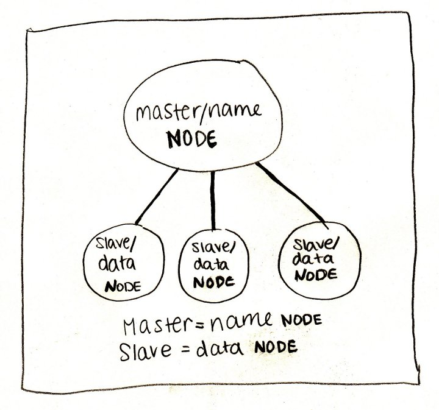

Hadoop is an open-source framework for distributed storage and processing of big-data sets.
Hadoop has two main pieces: storage and processing. The Hadoop Distributed File System (HDFS) comprises the storage part; this system splits files into pieces and stores them redudantly on relatively cheap machines (known as DataNodes); access to these datanodes is controlled by one NameNode which hosts the file system index. Data is replicated across multiple datanodes for relaibility. By indexing and tracking data across a cluster of servers, it enables the processing of lots of data. Like, lots.
The processing part of Hadoop is the MapReduce Engine. The MapReduce framework consists of a master ResourceManager and a worker NodeManager on each node. Client applications submit MapReduce jobs to a JobTracker; each job splits the input data into blocks which are processed in parallel by map tasks. The output of all of the map tasks is sorted by the MapReduce framework and input into reduce tasks.
Hold up. What's MapReduce?
To start with, we're going to need an AWS EC2 account.
example.js